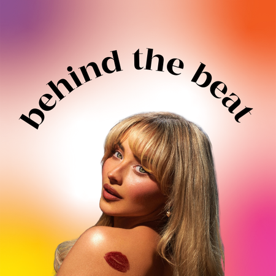
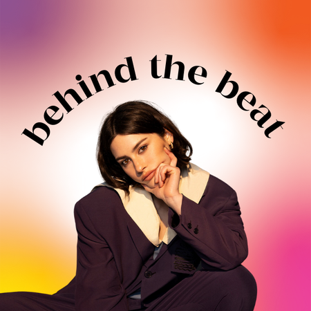
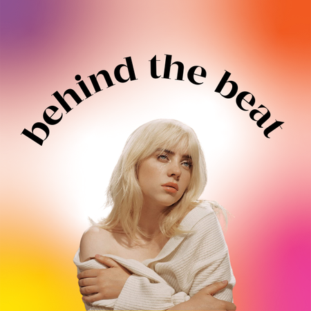
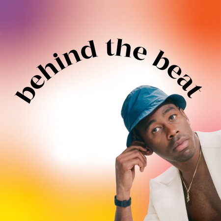
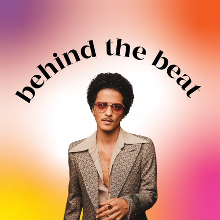

Alle afleveringen
    In de podcasts gaan we het hebben over de meest recent uitgekomen albums, leuke features, nieuwe relaties en alles rondom de meest populaire artiesten van dit moment. Luister de podcast over jouw favoriete artiest of een artiest die je beter wil leren kennen nu op spotify door op jouw artiest naar keuze te klikken. Veel luister plezier!